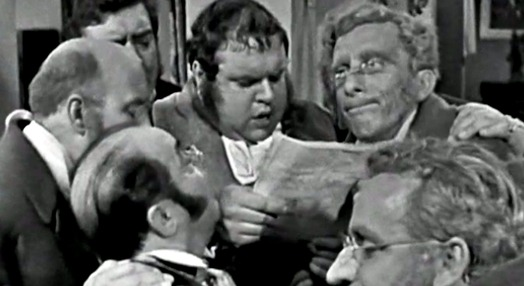

Cinema e televisão
Cartazes e fotogramas de filmes e programas em que participou.
Cinema
Por ordem cronológica. Também participou em Fürchte dich nicht, Jakob! (1981; Padre), segundo o IMDb, e em O Vestido Cor de Fogo (1985, de Lauro António; Coronel Valadares) e em Vertigem (1992, póstumo, de Leandro Ferreira; Tito Guedes). Filmografia segundo o CinePT (Universidade da Beira Interior) para o cinema português, completada com outras bases para as co-produções; em verificação. Ver também a Cronologia.


Televisão
Participou em teleteatros, séries, minisséries e na telenovela Chuva na Areia, entre 1958 e 1988. Ver também a entrevista Perfil (RTP, 1978).
| Ano | Título | Tipo | Papel |
|---|---|---|---|
| 1958 | O Tio Simplício | Teleteatro | |
| 1959 | O Grande Teatro do Mundo | Teleteatro | Rei |
| 1959 | O Improviso de Barba-Azul | Teleteatro | Barba-Azul |
| 1959 | Quanto Importa Ser Leal | Teleteatro | Chasuble |
| 1959 | História de Uma Mulher | Série (1 episódio) | |
| 1961 | O Inspector | Teleteatro | |
| 1962 | O Príncipe de Homburgo | Teleteatro | |
| 1963 | Nunca se Sabe | Teleteatro | |
| 1963 | Noite de Reis | Teleteatro | Capitão de Navios |
| 1964 | A Aposta | Teleteatro | Banqueiro |
| 1964 | Amigo de Sandro; Caruncho; Um Mês no Campo | Teleteatro | |
| 1965 | O Fugitivo de uma Noite; Bons Sentimentos; Os Adelfos; Sereneta de Tchaikowsky | Teleteatro | |
| 1966 | Gil Vicente e o Seu Teatro | Curta-metragem | |
| 1973 | Ajax, de Sófocles (Cronologia) | Teleteatro; assina a versão para a RTP | Fonte: arquivo familiar |
| 1979 | Manhã Submersa | Minissérie (4 episódios) | Padre Lino |
| 1982 | Gente Fina É Outra Coisa | Série (1 episódio) | António Nuno Ervedosa de Milheiros |
| 1983 | A Imagem das Letras | Série (1 episódio) | Declamação |
| 1983 | A Bisbilhoteira | Telefilme | |
| 1983 | L'épingle noire | Minissérie (1 episódio) | O governador da província |
| 1984 | 1, 2, 3 | Série (1 episódio) | Imperador Nero |
| 1984 | Le mystérieux docteur Cornélius | Minissérie (3 episódios) | Dr. Sanchez |
| 1984 | L'homme de Suez | Minissérie (1 episódio) | O terceiro convidado |
| 1985 | Chuva na Areia | Telenovela (85 episódios), a única que fez | Neuber |
| 1986–1987 | O Anel Mágico | Série (12 episódios) | Luigi Ferratini |
| 1987 | Iratan e Iracema | Minissérie (6 episódios) | A criada velha; o mordomo |
| 1988 | O Dia em Que Raptaram o Papa | Telefilme |
Lista segundo o IMDb (base colaborativa), confrontada com o arquivo familiar; títulos, datas e papéis em verificação. A RTP Arquivos tem outros registos, sem ficha artística.



Cartazes e fotogramas são reproduzidos para documentar a carreira de Carlos Wallenstein; os direitos pertencem aos respectivos titulares. A lista vai crescendo à medida que a filmografia é confirmada. Se detiver direitos sobre alguma imagem e preferir que seja retirada, escreva-nos através de Contactos. Ver também Direitos.